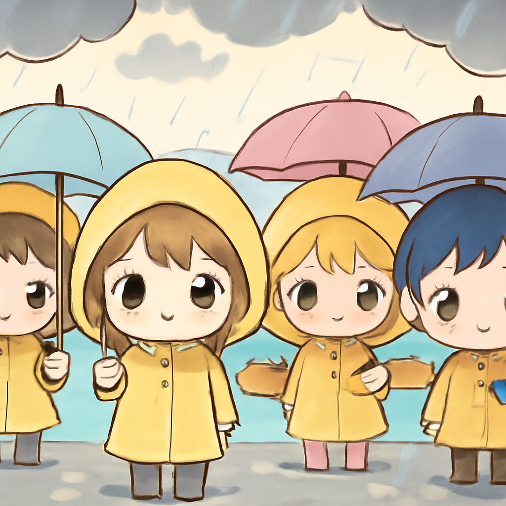

其一 · 蘇丹 · 醫院遭襲或構成戰爭罪
蘇丹的醫院遭到攻擊，可能構成戰爭罪。
在蘇丹，根據BBC的調查，RSF武裝力量多次襲擊醫院，造成大量傷亡。聯合國人權官員表示，這些行為可能構成戰爭罪，讓人不禁擔心人道危機的升級。希望在這種困境中，受影響的人民能早日得到援助。
🔗 原始新聞 ↗
2026-10-23 · 以古觀今，以笑抗愁
蘇丹的醫院遭到攻擊，可能構成戰爭罪。
在蘇丹，根據BBC的調查，RSF武裝力量多次襲擊醫院，造成大量傷亡。聯合國人權官員表示，這些行為可能構成戰爭罪，讓人不禁擔心人道危機的升級。希望在這種困境中，受影響的人民能早日得到援助。
🔗 原始新聞 ↗
馬斯克恢復烏克蘭的星鏈網路接入。
在烏克蘭，馬斯克宣布恢復星鏈（Starlink）服務，這對軍事行動至關重要。這位科技大亨的每一個決定都像是在玩一場國際象棋，棋盤上全是軍事與科技的鬥爭。希望未來能有更多的支持，讓和平早日回到這片土地。
🔗 原始新聞 ↗
西藏發生強震，造成16人不幸遇難。
最近在中國西藏發生了一場強烈地震，導致16人遇難，當地的交通和基礎設施受到嚴重影響。這場自然災害提醒我們，無論科技多進步，大自然的力量依然無法小覷。希望受災者能夠早日重建家園。
🔗 原始新聞 ↗
南法暴風雨引發淹水，四人不幸遇難。

在法國南部，最近一場暴風雨造成淹水，已知四人喪生，包括兩位女性。這場天災不僅讓當地居民苦不堪言，也讓許多人對氣候變化的影響更加感到擔憂。希望未來能有更好的防災措施，避免類似悲劇再次發生。
🔗 原始新聞 ↗
德國逮捕一名疑似俄國間諜的烏克蘭人。
在德國，一名烏克蘭男子因涉嫌為俄羅斯間諜而被捕，這是今年以來多起間諜案件中的一起。這讓人不禁想問，德國的間諜活動到底有多活躍？在這種緊張的局勢下，國際間的信任關係顯得格外脆弱。希望未來的事態能有所緩解。
🔗 原始新聞 ↗